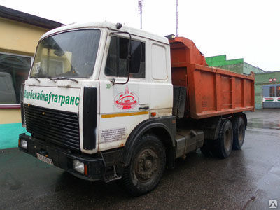
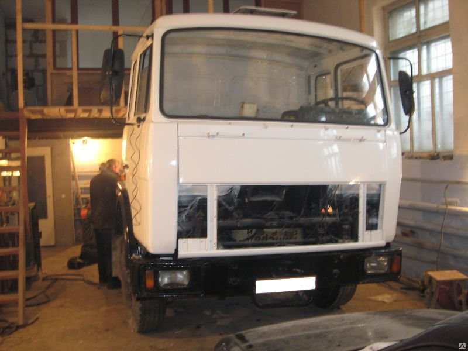
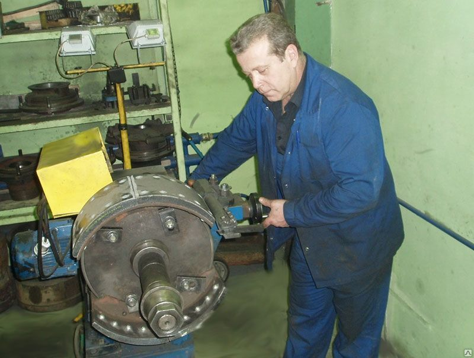

На территории участка г. Витебск находится СТО МАЗ. СТО является официальным сервисным партнером ОАО «МАЗ».
Наша СТО предлагает следующие услуги:
- гарантийный и послегарантийный ремонт техники МАЗ
- внутриреспубликанские грузоперевозки
- диагностика электронных блоков управления бортовых систем
- проверка и регулировка углов установки, демонтажа, монтажа и балансировки колес автомобилей
- мойка транспортных средств
- ремонт двигателей
- проверка и регулировка содержания СО и СН в выхлопных газах двигателей автомобилей
Контакты
Участок г. Витебск филиала "Автотранспортное предприятие № 5 г. Витебска" ОАО "Витебскоблавтотранс"
г. Витебск, ул Гагарина, 68
тел. 8 (0212) 36 22 77; моб. 8 (029) 719 01 18, 8 (029) 514 42 29
 Карта официальных сервисных партнеров ОАО "МАЗ" - управляющая компания холдинга "БЕЛАВТОМАЗ"
Карта официальных сервисных партнеров ОАО "МАЗ" - управляющая компания холдинга "БЕЛАВТОМАЗ"
Фотогалерея


